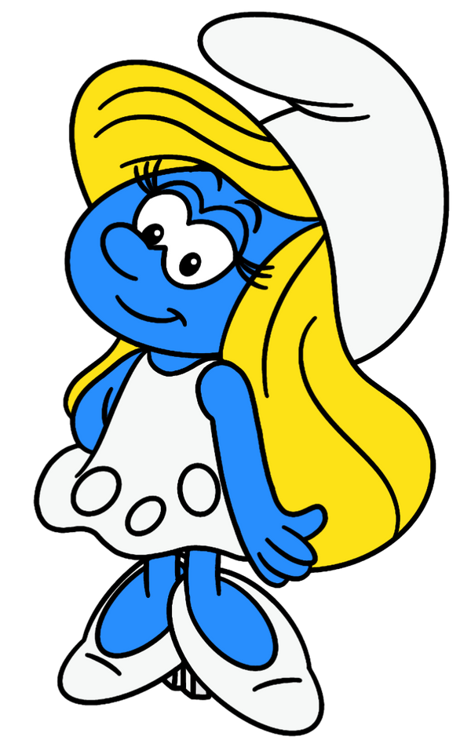
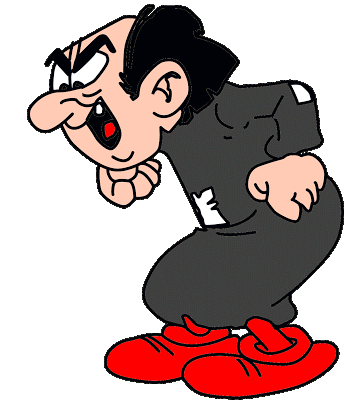
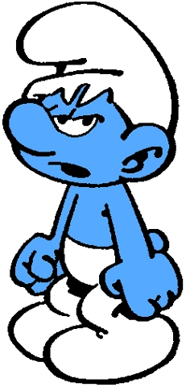

Papa Pitufo es el líder y figura paterna de los Pitufos. Tiene 542 años. Es un sabio y anciano Pitufo, que procura, en la medida de sus posibilidades, impedir que los Pitufos se comporten como rudos humanos. Como alquimista experimentado, muchas veces rescata a los Pitufos del peligro utilizando sus conocimientos.
Pitufina (nombre original en francés, Schtroumpfette) es un personaje de Los Pitufos, que aparece por primera vez en el cómic de 1966 del mismo nombre, y en la serie animada de 1981 pasaría a ser uno de los personajes principales a lo largo de todo su recorrido, casi siempre como la única pitufa (pitufo hembra).
Gargamel es un brujo hipócrita, malvado y traicionero que vive en una casa horrible en pleno corazón del bosque. Odia a los Pitufos y hace todo lo que puede para capturarlos y así convertirse en el hechicero más poderoso que jamás ha existido. Afortunadamente para ellos, también es muy tonto, así que siempre han podido escapar. Pero cuidado, ha jurado venganza.
El Pitufo Gruñón es un Pitufo que rara vez está conforme con cualquier cosa, sea lo que sea. Cada vez que le hablan de algo, suele responder que no le gusta. En una sociedad en la que todos parecen encantados con cualquier cosa que signifique diversión y celebraciones, es un tipo de lo más extraño.